ISO/IEC 27001:2022 Control Dependency Map
Version: v1.0
1. Purpose
ISO/IEC 27001 controls are often reviewed as independent checklist items. In practice, many controls only function effectively because other controls support them. This project provides a compact visual and tabular model of how a set of important Annex A controls and ISO clause/process activities depend on one another, and what weakens downstream when an upstream control is ineffective.
2. Intended audience
This project is intended as a learning, portfolio, and discussion resource for security practitioners, students, and consultants interested in ISO/IEC 27001 control design and dependencies.
3. How to read the diagrams
Each diagram is a Mermaid flowchart LR (left-to-right). Nodes are grouped into functional bands — Governance, Prevent, Detect, Respond, Recover — matching how a management audience typically reasons about a security program. An arrow from control A to control B means "the effectiveness of B depends, in whole or in part, on A." Each diagram includes a small legend describing node shading and arrow style.
Diagrams can be rendered by pasting the .mmd file contents into mermaid.live, or by embedding them in any Markdown renderer that supports Mermaid (GitHub, GitLab, Notion, Obsidian).
4. Relationship types and arrow meanings
| Type | Meaning |
|---|---|
| ENABLES | The source control is a functional precondition for the target control |
| SUPPORTS | The source control strengthens or informs the target control, without being strictly required |
| PROVIDES_EVIDENCE | The source control's output is used to assess or improve the target control |
| RECOVERY_DEPENDENCY | The target control's recovery outcome depends directly on the source control |
Arrow style: - Solid arrow — stronger dependency (typically ENABLES or RECOVERY_DEPENDENCY) - Dotted arrow — weaker or supporting dependency (typically SUPPORTS or PROVIDES_EVIDENCE)
5. Strength and confidence scales
Strength (1–5): the expected degree of downstream degradation if the source control fails, from minor (1) to severe/blocking (5).
Confidence:
| Level | Meaning |
|---|---|
| High | Strongly supported by the standard or clear operational logic |
| Medium | Reasonable professional interpretation; context-dependent |
| Low | Plausible but less certain; more likely to vary by organization |
6. Level 1 vs Level 2
-
Level 1 (Management Overview): one compact diagram showing only the strongest, most management-relevant dependencies across the entire model. Intended for briefings and executive review.
 { .on-glb }
{ .on-glb } -
Level 2 (Detail Views): three focused sub-diagrams — Governance + Risk, Prevent + Access + Supplier + Vulnerability, and Detect + Respond + Recover — that expand on the same underlying dependencies with more operational detail, for use in working sessions or deeper review.
Level 2a — Governance and Risk

{ .on-glb }Level 2b — Prevent, Access, Supplier and Vulnerability

{ .on-glb }Level 2c — Detect, Respond and Recover

{ .on-glb }Both levels draw from the same underlying dependency data; Level 2 is not a separate model.
7. Methodological limitations
- This is an analytical model built for this project, not official ISO guidance and not an ISO-endorsed artifact.
- Dependencies reflect general, typical patterns. Actual dependencies are contextual and may differ between organizations depending on architecture, outsourcing, maturity, and risk tolerance.
- ISO 27001 clause/process nodes (e.g., Clause 6.1 Risk Assessment/Treatment) are visually distinguished from Annex A control nodes using distinct node shading, since they represent different types of requirements within the standard.
- To preserve diagram readability, only the strongest dependencies are drawn. Weaker or lower-confidence relationships (typically Strength 1–2) are recorded only in the dependency table, not in the diagrams.
- Control names are short, paraphrased labels for diagram compactness — not verbatim ISO control text.
- The model should support professional judgment, not replace it.
For the dependency selection, scoring rules, relationship taxonomy, and diagram inclusion criteria, see Methodology.
89. Version
v1.0 — 18 anchor controls across Level 1; 56 dependency rows in the consolidated table; four Mermaid diagrams (one Level 1, three Level 2), quality-reviewed for label consistency, arrow/table alignment, and duplicate-free relationships.